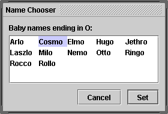
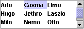
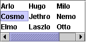
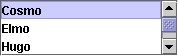

Feedback Form
|
|
Start of Tutorial > Start of Trail > Start of Lesson |
Search
Feedback Form |
AJListpresents the user with a group of items, displayed in one or more columns, to choose from. Lists can have many items, so they are often put in scroll panes.
In addition to lists, the following Swing components present multiple selectable items to the user: combo boxes, menus, tables, and groups of check boxes or radio buttons. To display hierarchical data, use a tree.
The following figures shows two applications that use lists. This section uses these examples as a basis for the discussions that follow.
 ListDialog
(used by ListDialogRunner)ListDemo This rest of this section discusses the following topics:
Try this:
- Run ListDialogRunner and ListDemo using JavaTM Web Start
. Or, to compile and run the examples yourself, consult the example index.
- To bring up the ListDialog, click the Pick a new name... button in the window titled Name That Baby.
The resulting dialog is a ListDialog instance that's been customized to have the title Name Chooser.- In ListDemo, try adding (hiring) and removing (firing) a few items.
Here is the code fromListDialog.javathat creates and sets up its list:
The code passes an array to the list's constructor. The array is filled with strings that were passed in from another object. In our example, the strings happen to be boys' names.list = new JList(data); //data has type Object[] list.setSelectionMode(ListSelectionModel.SINGLE_INTERVAL_SELECTION); list.setLayoutOrientation(JList.HORIZONTAL_WRAP); list.setVisibleRowCount(-1); ... JScrollPane listScroller = new JScrollPane(list); listScroller.setPreferredSize(new Dimension(250, 80));Other
JListconstructors let you initialize a list from aVectoror from an object that adheres to theListModelDefaultListModelsetModelmethod. See Adding Items to and Removing Items from a List for an example.The call to
setSelectionModespecifies how many items the user can select, and whether they must be contiguous; the next section tells you more about selection modes.The call to
setLayoutOrientationlets the list display its data in multiple columns. The valueJList.HORIZONTAL_WRAPspecifies that the list should display its items from left to right before wrapping to a new row. Another possible value isJList.VERTICAL_WRAP, which specifies that the data be displayed from top to bottom (as usual) before wrapping to a new column. The following figures show these two wrapping possibilities, together with the default,JList.VERTICAL.
   HORIZONTAL_WRAPVERTICAL_WRAPVERTICALIn combination with the call to
setLayoutOrientation, invokingsetVisibleRowCount(-1)makes the list display the maximum number of items possible in the available space onscreen. Another common use ofsetVisibleRowCountis to specify to the lists's scroll pane how many rows the list prefers to display.
A list uses an instance ofListSelectionModelsetSelectionModemethod on the list. For example, bothListDialogandListDemoset the selection mode toSINGLE_SELECTION(a constant defined byListSelectionModel) so that only one item in the list can be selected. The following table describes the three list selection modes:
Mode Description SINGLE_SELECTION
Only one item can be selected at a time. When the user selects an item, any previously selected item is deselected first. SINGLE_INTERVAL_SELECTION
Multiple, contiguous items can be selected. When the user begins a new selection range, any previously selected items are deselected first. MULTIPLE_INTERVAL_SELECTION
The default. Any combination of items can be selected. The user must explicitly deselect items. No matter which selection mode your list uses, the list fires list selection events whenever the selection changes. You can process these events by adding a list selection listener to the list with the
addListSelectionListenermethod. A list selection listener must implement one method:valueChanged. Here's thevalueChangedmethod for the listener inListDemo:Many list selection events can be generated from a single user action such as a mouse click. Thepublic void valueChanged(ListSelectionEvent e) { if (e.getValueIsAdjusting() == false) { if (list.getSelectedIndex() == -1) { //No selection, disable fire button. fireButton.setEnabled(false); } else { //Selection, enable the fire button. fireButton.setEnabled(true); } } }getValueIsAdjustingmethod returnstrueif the user is still manipulating the selection. This particular program is interested only in the final result of the user's action, so thevalueChangedmethod does something only ifgetValueIsAdjustingreturnsfalse.Because the list is in single-selection mode, this code can use
getSelectedIndexto get the index of the just-selected item.JListprovides other methods for setting or getting the selection when the selection mode allows more than one item to be selected. If you want, you can listen for events on the list's list selection model rather than on the list itself. ListSelectionDemo
The ListDemo example that we showed previously features a list whose contents can change. You can find the source code for ListDemo inListDemo.javaThis particular program uses an instance oflistModel = new DefaultListModel(); listModel.addElement("Alison Huml"); listModel.addElement("Kathy Walrath"); listModel.addElement("Lisa Friendly"); listModel.addElement("Mary Campione"); listModel.addElement("Sharon Zakhour"); listModel.addElement("Alan Sommerer"); list = new JList(listModel);DefaultListModel, a class provided by Swing. In spite of the class name, a list does not have aDefaultListModelunless your program explicitly makes it so. IfDefaultListModeldoesn't suit your needs, you can write a custom list model, which must adhere to theListModelinterface.The following code snippet shows the
actionPerformedmethod for the action listener registered on the Fire button. The bold line of code removes the selected item in the list. The remaining lines in the method disable the fire button if the list is now empty, and make another selection if it's not.public void actionPerformed(ActionEvent e) { int index = list.getSelectedIndex(); listModel.remove(index); int size = listModel.getSize(); if (size == 0) { //Nobody's left, disable firing. fireButton.setEnabled(false); } else { //Select an index. if (index == listModel.getSize()) { //removed item in last position index--; } list.setSelectedIndex(index); list.ensureIndexIsVisible(index); } }Here's the
actionPerformedmethod for the action listener shared by the Hire button and the text field:This code uses the list model'spublic void actionPerformed(ActionEvent e) { String name = employeeName.getText(); //User didn't type in a unique name... if (name.equals("") || alreadyInList(name)) { Toolkit.getDefaultToolkit().beep(); employeeName.requestFocusInWindow(); employeeName.selectAll(); return; } int index = list.getSelectedIndex(); //get selected index if (index == -1) { //no selection, so insert at beginning index = 0; } else { //add after the selected item index++; } listModel.insertElementAt(employeeName.getText(), index); //Reset the text field. employeeName.requestFocusInWindow(); employeeName.setText(""); //Select the new item and make it visible. list.setSelectedIndex(index); list.ensureIndexIsVisible(index); }insertElementAtmethod to insert the new name after the current selection or, if no selection exists, at the beginning of the list. If you just wish to add to the end of the list, you can useDefaultListModel'saddElementmethod instead.Whenever items are added to, removed from, or modified in a list, the list model fires list data events. Refer to How to Write a List Data Listener
ListDemo, but adds buttons that move items up or down in the list.
A list uses an object called a cell renderer to display each of its items. The default cell renderer knows how to display strings and icons. If you want to put any otherObjectin a list or if you want to change the way the default renderer display icons or strings, you can implement a custom cell renderer. Take these steps to provide a custom cell renderer for a list:We don't provide an example of a list with a custom cell renderer, but we do have an example of a combo box with a custom renderer — and combo boxes use the same type of renderer as lists. See the example described in Providing a Custom Renderer.
- Write a class that implements the
ListCellRenderer- Create an instance of your class and call the list's
setCellRendererusing the instance as an argument.
The following tables list the commonly usedJListconstructors and methods. Other methods you are most likely to invoke on aJListobject are those such assetPreferredSizethat its superclasses provide. See The JComponent API for tables of commonly used inherited methods.Much of the operation of a list is managed by other objects. The items in the list are managed by a list model object, the selection is managed by a list selection model object, and most programs put a list in a scroll pane to handle scrolling. For the most part, you don't need to worry about the models because
JListcreates them as necessary and you interact with them implicitly withJList's convenience methods.That said, the API for using lists falls into these categories:
Initializing List Data Method or Constructor Purpose JList(ListModel)
JList(Object[])
JList(Vector)
JList()Create a list with the initial list items specified. The second and third constructors implicitly create an immutable ListModel; you should not subsequently modify the passed-in array orVector.void setModel(ListModel)
ListModel getModel()Set or get the model that contains the contents of the list. void setListData(Object[])
void setListData(Vector)Set the items in the list. These methods implicitly create an immutable ListModel.
Displaying the List Method Purpose void setVisibleRowCount(int)
int getVisibleRowCount()Set or get how many rows of the list should be visible. void setLayoutOrientation(int)
int getLayoutOrientation()Set or get the way list cells are laid out. The possible layout formats are specified by the JList-defined valuesVERTICAL(a single column of cells; the default),HORIZONTAL_WRAP("newspaper" style with the content flowing horizontally then vertically), andVERTICAL_WRAP("newspaper" style with the content flowing vertically then horizontally). Introduced in 1.4.int getFirstVisibleIndex()
int getLastVisibleIndex()Get the index of the first or last visible item. void ensureIndexIsVisible(int)Scroll so that the specified index is visible within the viewport that this list is in.
Managing the List's Selection Method Purpose void addListSelectionListener(ListSelectionListener)Register to receive notification of selection changes. void setSelectedIndex(int)
void setSelectedIndices(int[])
void setSelectedValue(Object, boolean)
void setSelectionInterval(int, int)Set the current selection as indicated. Use setSelectionModeto set what ranges of selections are acceptable. The boolean argument specifies whether the list should attempt to scroll itself so that the selected item is visible.int getSelectedIndex()
int getMinSelectionIndex()
int getMaxSelectionIndex()
int[] getSelectedIndices()
Object getSelectedValue()
Object[] getSelectedValues()Get information about the current selection as indicated. void setSelectionMode(int)
int getSelectionMode()Set or get the selection mode. Acceptable values are: SINGLE_SELECTION,SINGLE_INTERVAL_SELECTION, orMULTIPLE_INTERVAL_SELECTION(the default), which are defined inListSelectionModel.void clearSelection()
boolean isSelectionEmpty()Set or get whether any items are selected. boolean isSelectedIndex(int)Determine whether the specified index is selected.
Managing List Data Class or Method Purpose int getNextMatch(String, int, javax.swing.text.Position.Bias)Given the starting index, search through the list for an item that starts with the specified string and return that index (or -1 if the string isn't found). The third argument, which specifies the search direction, can be either Position.Bias.ForwardorPosition.Bias.Backward. For example, if you have a 6-item list,getNextMatch("Matisse", 5, javax.swing.text.Position.Bias.Forward)searches for the string "Matisse" in the item at index 5, then (if necessary) at index 0, index 1, and so on. Introduced in 1.4.void setDragEnabled(boolean)
boolean getDragEnabled()Set or get the property that determines whether automatic drag handling is enabled. See Drag and Drop
This table shows the examples that useJListand where those examples are described.
Example Where Described Notes SplitPaneDemoHow to Use Split Panes Contains a single-selection, immutable list. ListDemoThis section Demonstrates how to add and remove items from a list at runtime. ListDialogThis section, How to Use BoxLayout Implements a modal dialog with a single-selection list. ListDataEventDemoHow to Write a List Data Listener Demonstrates listening for list data events on a list model. ListSelectionDemoHow to Write a List Selection Listener Contains a list and a table that share the same selection model. You can dynamically choose the selection mode. SharedModelDemoUsing Models Modifies ListSelectionDemoso that the list and table share the same data model.CustomComboBoxDemoProviding a Custom Renderer Shows how to provide a custom renderer for a combo box. Because lists and combo boxes use the same type of renderer, you can use what you learn there an apply it to lists. In fact, a list and a combo box can share a renderer.
|
|
Start of Tutorial > Start of Trail > Start of Lesson |
Search
Feedback Form |
Copyright 1995-2004 Sun Microsystems, Inc. All rights reserved.